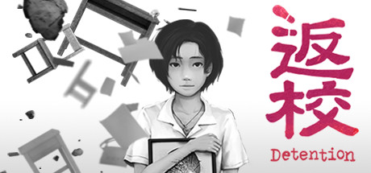
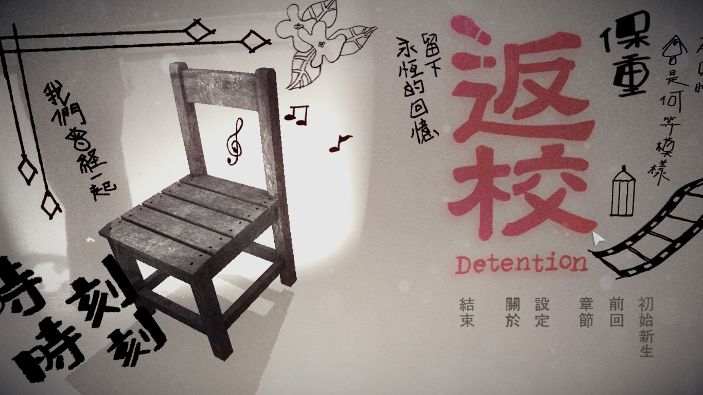
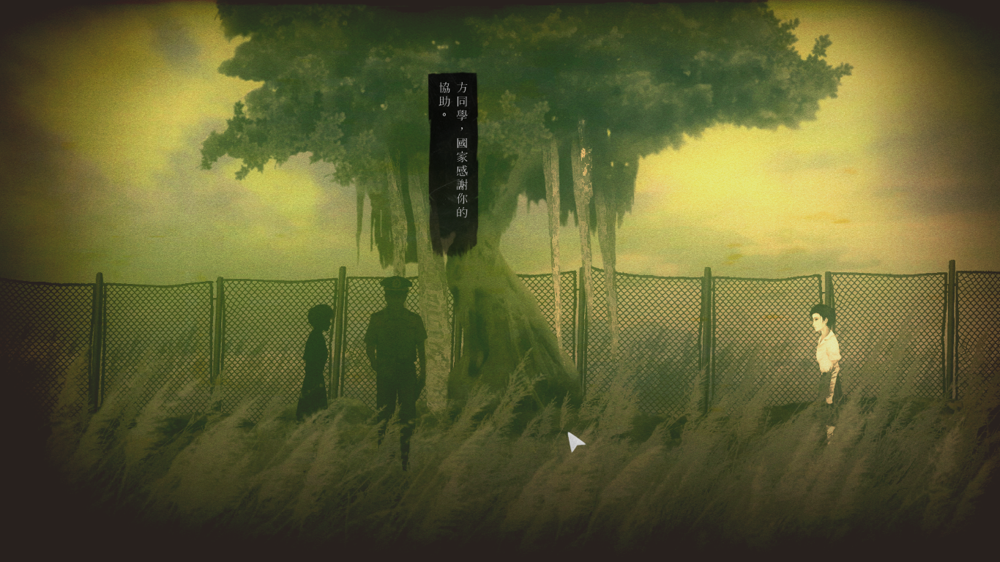

曾蔚為風潮的一款遊戲 返校，是由台灣赤燭遊戲開發的恐怖解謎電子角色扮演遊戲，於2017年1月13日在PC遊戲平台Steam發行，同年10月3日在PlayStation 4上發行。
遊戲畫面採用橫向捲軸模式，遊戲時間約４小時。在部份場景中、遊戲僅提供有限的視角，除了主角周圍、場景中的其他區域皆不可視。玩家使用滑鼠操控主角行動。
《返校》視覺圖
颱風來臨前的翠華中學裡，魏仲廷在課堂上不小心睡過了頭，醒來後發現教室空無一人。他在禮堂發現了主角方芮欣，兩人決定找電話求救。之後、魏仲廷突然吊死在天花板上，於是玩家操控方芮欣四處探索，並引出隱藏於她背後的故事．．．
翠華中學三年級的女學生，容貌清秀、成績優異，更出身公務員家庭。但由於父親的婚外情和家庭暴力，導致雙親的婚姻破碎，方芮欣的心情也受到影響，在學校情緒不穩、成績也日漸敗退，因此受到輔導室老師張明暉的關注。親切的輔導過程使得方芮欣為之傾倒，兩人萌生師生戀。過程中、方芮欣得知張明暉與女教師殷翠涵、男學生魏仲廷等人組織讀書會、閱讀政府所不允許的禁書。張明暉苦於師生戀給自己帶來的壓力，又怕讀書會東窗事發後會連累方芮欣，所以提出分手。方芮欣以為殷翠涵是第三者，一怒之下向魏仲廷謊稱自己想讀禁書、爭取知識，從魏仲廷身上取得讀書會的書單，並向學校的軍訓教官白國峰舉報張明暉等人涉嫌反政府，在事後對自己的行為感到萬分懊悔，自學校樓頂一躍而下，靈魂徘徊於校園內不得超生。
颱風來臨前在課堂上不小心睡過了頭，醒來後發現教室空無一人。他在禮堂發現了主角方芮欣，兩人決定找電話求救。之後、突然吊死在天花板上...
與女教師殷翠涵、輔導室老師張明暉等人組織讀書會、閱讀政府所不允許的禁書。被方芮欣欺騙想讀禁書、爭取知識，便將書單交給她。被教官發現後在學校背起告密者的黑鍋，遭同學霸凌，在自首之後入獄服十五年有期徒刑。
最後，被囚十五年後出獄的魏仲廷，回到他的教室裡與方芮欣對視著。
青年才俊的張明暉是喝過洋墨水的高知識份子，親切的輔導過程使得方芮欣為之傾倒，兩人萌生師生戀。
苦於師生戀給自己帶來的壓力，又怕讀書會東窗事發後會連累方芮欣，所以提出分手。
在方芮欣舉發後，遭軍警逮捕，依照叛亂罪槍決
與輔導室老師張明暉、男學生魏仲廷等人組織讀書會、閱讀政府所不允許的禁書。被方芮欣以為是第三者，進而遭到舉發。之後連夜出國，自此流亡海外、直到五十歲時因肺癌客死他鄉。
遊戲主畫面
遊戲內有雙重結局，結局的差異取決於方芮欣對她內心的回答。如果方芮欣無法面對內心，她的輪迴將不會結束。如果她能夠面對內心，則她會發現張老師給她捎來的一紙告別。
《返校》除了遊戲很精采之外，也有一些小細節是值得一提的，以下是在網路上收集到的，幾位網友的彩蛋解析。
方芮欣是地縛靈。在台灣的民間信仰相信，自殺的人死了之後會一直重複死前的動作，且永世不得翻身。印出密碼木桌的那潑血跟上面的痕跡完全一樣、鋼琴只有正確的鍵耗損的特別嚴重都足以佐證，方芮欣的靈魂已經在學校輪迴過上千次了。
出現過幾次的白教官，跟前總統馬英九長得很像。
在榕樹下的無名墳墓，就是方芮欣的墳墓，後面有說道"如果那時沒這樣做"意旨悔恨的意思，所以在此埋了一座墳。
遊戲中會出現的女鬼，是方芮欣自殺後的鬼魂，不斷輪迴的罪孽與自責的聚集體。
輔導室出現多手的鬼，是戒嚴體制下恐懼的集合體，有一段它狂敲門，方掩耳朵躲角落，應該是類似查水表的概念。
手槍的意象，就是拿著書單舉發的意思。
魏仲廷對方芮欣是有感情的，當時被舉發後他包庇了方芮欣，被問書單為何外流時也回答不知道，被叫抓耙仔還被霸凌，但他始終沒有把方芮欣供出來。
試玩版最後高大的怪物其實是教官的意象，這個鬼怪做得比其他的高大，象徵著當時教官的地位凌駕於其他人之上。
方芮欣使用的手段跟她媽媽舉報爸爸的方式一樣，媽媽說：「只是手腳不乾淨，死不了的。」，所以方芮欣當時可能不知道事情這麼嚴重，沒想到真的死人了
在遊戲中，張明暉曾稱呼方芮欣是白水仙，而在壞結局時，背景是一堆學生在血河中載浮載沉，加上真結局中的一段口白「白水仙染上一河鮮血，只能如鐵鏽般凋零。」，還有在故事開始時就遇到一盆白水仙，但只有一株活著，其他的都枯死了，這些就像在暗喻方芮欣告發後，只有她一人平安無事的事實。
遊戲有一段用收音機改變場景的橋段，收音機的音樂是鄧雨賢的四月望雨組曲，除了是當時的禁歌，也是遊戲中方芮欣的心境，四季紅代表她遇見張老師的喜悅，月夜愁代表她父母不和時期的哀愁，望春風代表她和老師幽會的希望，雨夜花代表她無法挽回一切的破滅
一開始魏仲廷在抽風機裡找到白鹿項鍊(張老師送給方芮欣的禮物)，與方芮欣在另一個世界看到死老鼠，也許都在說方芮欣的罪行。在英文中的老鼠rat也有告密者的意思。
地下室中4個牢房，第一個插著令牌是指被派死刑的張老師，第二個是逃出海外的殷老師，第三個被囚禁然後跑出來的是指魏仲廷關15年後被釋放，第四個空牢房便是沒被逮捕卻是掀起整件事的方芮欣。
家中的時鐘有太極的圖像，可是陰大於陽，暗示是媽媽受不了爸爸外遇，去舉報爸爸讓他被抓走的。
到底方芮欣是怎麼死的，推測是跳樓，有一段暗示她從頂樓跳下、鋼琴教室的紙條說她一躍而下還有小豬撲滿落地，她說希望破碎之類的話。至於是不是上吊，那個繩索應該是代表死結的意思，表示一切結束了。
最後，返校這遊戲的名字是因為魏仲廷被釋放出來後他返回學校；英文的 Detention是拘留、滯留，除了代表魏仲廷被囚禁了15年以外，也代表方芮欣的靈魂被囚禁在這不斷輪迴。
遊戲畫面
《返校》不只是個遊戲，更是反應了台灣當年戒嚴時，我們所看不到的種種，沒有被看到不代表這件事不存在、不代表它沒有發生過。在歷史上一直都存在著爭議，我們歸咎功過討論對錯，卻還是看不到消失在歷史洪流中的人，與曾經的那些悲劇。